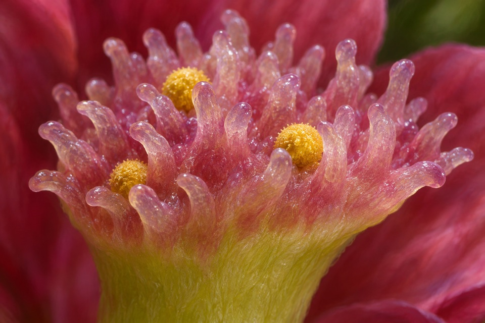

Named-recipient result
A paired A. lyrata SRK and SCR haplotype conferred a self-incompatibility phenotype on self-fertile A. thaliana in the reported comparison.
Developmental stability and accession dependence require separate testing.
Score rejection of matching pollen independently from acceptance of compatible crosses.
Source context. Arabidopsis lyrata
Reported context. Arabidopsis thaliana
Targeted primary source check · Qualified human review pending

A paired A. lyrata SRK and SCR haplotype conferred a self-incompatibility phenotype on self-fertile A. thaliana in the reported comparison.
Developmental stability and accession dependence require separate testing.